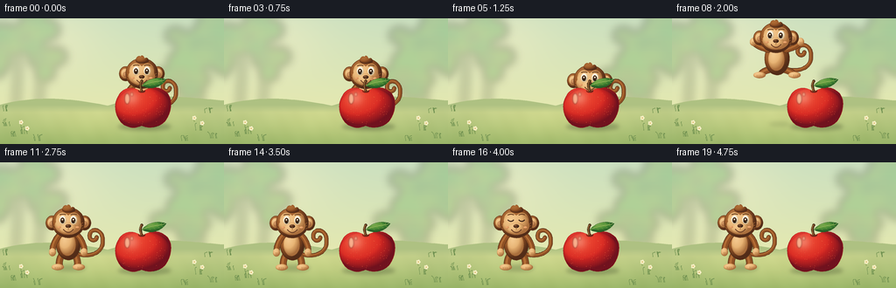
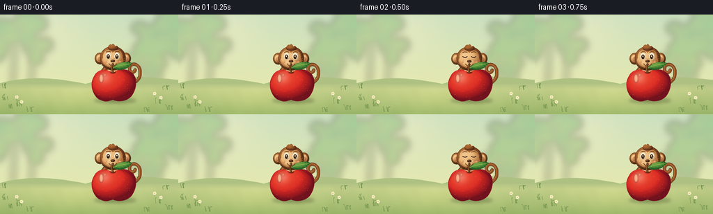

CODING AGENTS AS PIXEL WORLD MODELS
traex/GPT-6.1-Sol · dynamic_spatial_relationship_0053
点击播放 · 原生 RGB 像素
逐轮保存的候选
回放视频、检查图与代码变化。
每份候选均可单独播放。实际图片检查记录在下方工具轨迹中。
候选 01播放与检查图
点击播放 · 原生 RGB 像素


展开代码变化
--- 上一保存版本
+++ 本次保存版本
@@ -0,0 +1,301 @@
+from pathlib import Path
+import math, json
+import numpy as np
+from PIL import Image, ImageDraw, ImageFilter
+import artifact_io
+
+ROOT = Path(__file__).resolve().parent
+SPEC = json.loads((ROOT/'task_spec.json').read_text())
+W,H = SPEC['width'], SPEC['height']
+S = 4
+rng = np.random.default_rng(7)
+
+# Every object is drawn from mathematical contours, at 4x resolution.
+def xy(p): return (round(p[0]*S),round(p[1]*S))
+def box(b): return tuple(round(v*S) for v in b)
+def bezier(p0,p1,p2,p3,n=28):
+ pts=[]
+ for t in np.linspace(0,1,n):
+ a=1-t
+ pts.append((a*a*a*p0[0]+3*a*a*t*p1[0]+3*a*t*t*p2[0]+t*t*t*p3[0],
+ a*a*a*p0[1]+3*a*a*t*p1[1]+3*a*t*t*p2[1]+t*t*t*p3[1]))
+ return pts
+
+def path(start, segs):
+ out=[start]; current=start
+ for c1,c2,end in segs:
+ out += bezier(current,c1,c2,end)[1:]; current=end
+ return out
+
+def line(im, pts, color, width=1):
+ d=ImageDraw.Draw(im)
+ d.line([xy(p) for p in pts], fill=color, width=max(1,round(width*S)),joint='curve')
+ r=width*S/2
+ for p in [pts[0],pts[-1]]:
+ x,y=xy(p); d.ellipse((x-r,y-r,x+r,y+r),fill=color)
+
+def ell(im, b, col): ImageDraw.Draw(im).ellipse(box(b),fill=col)
+
+def shade_shape(im, pts, base, light=None, dark=None, highlight=(-.4,-.5), spec=0, outline=None):
+ xs=[p[0] for p in pts]; ys=[p[1] for p in pts]
+ x0=max(0,math.floor(min(xs)*S)-2); y0=max(0,math.floor(min(ys)*S)-2)
+ x1=min(W*S,math.ceil(max(xs)*S)+3); y1=min(H*S,math.ceil(max(ys)*S)+3)
+ if x1<=x0 or y1<=y0:return
+ mask=Image.new('L',(x1-x0,y1-y0),0)
+ ImageDraw.Draw(mask).polygon([(p[0]*S-x0,p[1]*S-y0) for p in pts],fill=255)
+ yy,xx=np.mgrid[y0:y1,x0:x1].astype(float)
+ cx=(min(xs)+max(xs))/2*S; cy=(min(ys)+max(ys))/2*S
+ rx=max(1,(max(xs)-min(xs))/2*S); ry=max(1,(max(ys)-min(ys))/2*S)
+ nx=(xx-cx)/rx; ny=(yy-cy)/ry
+ nz=np.sqrt(np.clip(1-nx*nx-ny*ny,0,1))
+ lit=np.clip(-.38*nx-.5*ny+.76*nz,0,1)
+ base=np.array(base,dtype=float)
+ dark=np.array(dark if dark is not None else base*.60,dtype=float)
+ light=np.array(light if light is not None else np.minimum(255,base*1.17+15),dtype=float)
+ v=dark[None,None,:]+(base-dark)[None,None,:]*np.minimum(lit[...,None]*1.5,1)
+ hi=np.maximum(0,(lit-.55)/.45)[...,None]
+ v=v*(1-hi*.58)+light[None,None,:]*(hi*.58)
+ if spec:
+ g=np.exp(-(((nx-highlight[0])/.26)**2+((ny-highlight[1])/.35)**2))
+ v=v*(1-g[...,None]*spec)+np.array([255,244,218])*(g[...,None]*spec)
+ layer=Image.fromarray(np.uint8(np.clip(v,0,255)))
+ im.paste(layer,(x0,y0),mask)
+ if outline:
+ line(im,pts+[pts[0]],outline,.55)
+
+def oval(im,cx,cy,rx,ry,base,light=None,dark=None,spec=0,outline=None):
+ pts=[(cx+rx*math.cos(a),cy+ry*math.sin(a)) for a in np.linspace(0,2*math.pi,100)]
+ shade_shape(im,pts,base,light,dark,spec=spec,outline=outline)
+
+# Soft, sunlit orchard clearing. No moving camera or distracting background action.
+def make_background():
+ yy,xx=np.mgrid[0:H*S,0:W*S].astype(float); yy/=S;xx/=S
+ t=np.clip(yy/110,0,1)
+ upper=np.array([203,224,192]); lower=np.array([230,233,175])
+ a=upper[None,None,:]*(1-t[...,None])+lower[None,None,:]*t[...,None]
+ glow=np.exp(-((xx-54)/68)**2-((yy-24)/48)**2)
+ a=a*(1-glow[...,None]*.38)+np.array([255,244,198])*glow[...,None]*.38
+ im=Image.fromarray(np.uint8(a))
+ trees=Image.new('RGBA',im.size,(0,0,0,0));d=ImageDraw.Draw(trees)
+ for cx,cy,r in [(-7,45,34),(22,22,30),(232,33,34),(270,40,39),(48,47,22),(212,65,24)]:
+ d.line([xy((cx,cy)),xy((cx-4,105))],fill=(107,126,84,80),width=7*S)
+ for k in range(14):
+ x=cx+rng.normal(0,r*.46);y=cy+rng.normal(0,r*.35)
+ rr=rng.uniform(r*.27,r*.68)
+ d.ellipse(box((x-rr,y-rr*.8,x+rr,y+rr*.8)), fill=(118+int(rng.integers(-12,18)),157+int(rng.integers(0,27)),103,105))
+ trees=trees.filter(ImageFilter.GaussianBlur(5*S))
+ im=Image.alpha_composite(im.convert('RGBA'),trees).convert('RGB')
+ d=ImageDraw.Draw(im)
+ hill=path((0,99),[((40,88),(80,91),(123,100)),((177,83),(211,91),(256,94))])+[(256,144),(0,144)]
+ d.polygon([xy(p) for p in hill],fill=(174,193,130))
+ # Ground plane with painterly, low-contrast irregularities.
+ yy,xx=np.mgrid[0:H*S,0:W*S].astype(float); xx/=S;yy/=S
+ ground_mask=np.clip((yy-99)/9,0,1)
+ front=np.clip((yy-99)/45,0,1)
+ ground=np.array([197,208,141])[None,None,:]*(1-front[...,None])+np.array([151,179,103])[None,None,:]*front[...,None]
+ glow=np.exp(-((xx-116)/86)**2-((yy-118)/30)**2)
+ ground+=glow[...,None]*np.array([20,14,9])
+ noise=1.2*np.sin(xx*.12+yy*.07)+.7*np.cos(xx*.3-yy*.14)
+ ground+=noise[...,None]
+ a=np.asarray(im).astype(float);a=a*(1-ground_mask[...,None])+ground*ground_mask[...,None]
+ im=Image.fromarray(np.uint8(np.clip(a,0,255)))
+ # Sparse grasses frame rather than obscure the action.
+ for x,y in [(8,123),(15,135),(28,132),(43,140),(227,128),(244,137),(211,140),(5,106),(238,108)]:
+ for k in range(5):
+ off=rng.uniform(-4,4);ht=rng.uniform(3,8)
+ p=bezier((x+off,y),(x+off,y-ht*.5),(x+off-2,y-ht),(x+off+rng.uniform(-3,3),y-ht))
+ line(im,p,(113,146,81),.55)
+ for x,y in [(24,119),(31,126),(222,114),(231,120)]:
+ line(im,[(x,y+4),(x,y-1)],(124,153,79),.6)
+ for a in np.linspace(0,2*math.pi,6)[:-1]:
+ ell(im,(x+math.cos(a)*1.5-1,y+math.sin(a)*1.5-1,x+math.cos(a)*1.5+1,y+math.sin(a)*1.5+1),(246,238,196))
+ ell(im,(x-.6,y-.6,x+.6,y+.6),(211,170,77))
+ return im
+
+BACKGROUND=make_background()
+
+def shadow(im,x,y,rx,ry,alpha=80):
+ layer=Image.new('RGBA',im.size,(0,0,0,0))
+ ImageDraw.Draw(layer).ellipse(box((x-rx,y-ry,x+rx,y+ry)),fill=(52,72,38,alpha))
+ layer=layer.filter(ImageFilter.GaussianBlur(2.2*S))
+ im.paste(layer,(0,0),layer)
+
+FUR=(143,80,36); FUR_LIGHT=(199,130,67); FUR_DARK=(82,44,24)
+SKIN=(227,174,110); SKIN_LIGHT=(254,214,157); SKIN_DARK=(169,110,60)
+
+def fur_oval(im,x,y,rx,ry):oval(im,x,y,rx,ry,FUR,FUR_LIGHT,FUR_DARK,spec=.08,outline=(102,59,30))
+def skin_oval(im,x,y,rx,ry):oval(im,x,y,rx,ry,SKIN,SKIN_LIGHT,SKIN_DARK,spec=.08)
+
+def limb(im,pts,width=6):
+ line(im,pts,FUR_DARK,width+1.0)
+ line(im,pts,FUR,width)
+ line(im,[(x-.7,y-.5) for x,y in pts],(179,109,53),width*.35)
+
+
+def draw_monkey(im,x,foot,jump=0,crouch=0,blink=False,settle=0,phase=0):
+ # Crouching and landing squash the articulated torso without sliding feet.
+ head_y=foot-52+crouch*8+settle*4
+ body_y=foot-28+crouch*4+settle*2
+ head_x=x-1.2*jump
+ tail=path((x+11,foot-16),[
+ ((x+24,foot-12),(x+40,foot-17),(x+39,foot-31)),
+ ((x+40,foot-46),(x+23,foot-47),(x+24,foot-36)),
+ ((x+24,foot-31),(x+31,foot-30),(x+32,foot-35))])
+ tail=[(tx+math.sin(phase)*.8*(i/len(tail)),ty) for i,(tx,ty) in enumerate(tail)]
+ limb(im,tail,3.8)
+ # Back legs separate during flight, tuck up toward the hips.
+ for sign in [-1,1]:
+ hip=(x+sign*7,foot-16+crouch*2)
+ knee=(x+sign*(12+6*jump),foot-9-4*jump)
+ ankle=(x+sign*(10+8*jump),foot-2-8*jump)
+ limb(im,path(hip,[(hip,knee,ankle)]),7)
+ skin_oval(im,ankle[0]+sign*2,ankle[1]+1,7,3.6)
+ for k in range(3):
+ tx=ankle[0]+sign*(1+k*2)
+ line(im,[(tx,ankle[1]+1),(tx,ankle[1]+2.8)],(172,112,63),.45)
+ fur_oval(im,x,body_y,14+crouch,19-crouch*3-settle*1.5)
+ skin_oval(im,x-.7,body_y+1,9.2,13-crouch*2-settle)
+ # Arms rise and spread for the jump, return naturally at landing.
+ for sign in [-1,1]:
+ shoulder=(x+sign*10,body_y-10)
+ elbow=(x+sign*(19+4*jump),body_y-1-12*jump+crouch*2)
+ hand=(x+sign*(18+9*jump),body_y+10-29*jump+crouch*1)
+ limb(im,path(shoulder,[(shoulder,elbow,hand)]),5.9)
+ skin_oval(im,hand[0],hand[1],4,4.6)
+ for k in range(2):
+ line(im,[(hand[0]-1+k*1.5,hand[1]+.3),(hand[0]-1+k*1.5,hand[1]+2.7)],(174,115,66),.4)
+ # Big round ears and small, characteristic hair tuft.
+ for sign in [-1,1]:
+ fur_oval(im,head_x+sign*18.5,head_y+.4,7.2,8.4)
+ skin_oval(im,head_x+sign*19,head_y+.2,4.7,5.5)
+ oval(im,head_x+sign*19,head_y+1.3,2.4,3,(194,134,84),(224,167,114),(155,95,56))
+ fur_oval(im,head_x,head_y,18.3,17.5)
+ tuft=path((head_x-7,head_y-14),[
+ ((head_x-7,head_y-19),(head_x-3,head_y-21),(head_x-1,head_y-19)),
+ ((head_x-1,head_y-22),(head_x+3,head_y-20),(head_x+3,head_y-17)),
+ ((head_x+6,head_y-19),(head_x+8,head_y-17),(head_x+8,head_y-13)),
+ ((head_x+3,head_y-11),(head_x-4,head_y-10),(head_x-7,head_y-14))])
+ shade_shape(im,tuft,FUR,FUR_LIGHT,FUR_DARK)
+ # Heart-shaped pale face mask: the eye patches connect into the cheeks.
+ face=path((head_x,head_y-8),[
+ ((head_x-7,head_y-15),(head_x-15,head_y-10),(head_x-14,head_y-1)),
+ ((head_x-19,head_y+7),(head_x-9,head_y+14),(head_x,head_y+14)),
+ ((head_x+10,head_y+14),(head_x+18,head_y+7),(head_x+14,head_y-1)),
+ ((head_x+15,head_y-10),(head_x+7,head_y-15),(head_x,head_y-8))])
+ shade_shape(im,face,SKIN,SKIN_LIGHT,SKIN_DARK,spec=.08)
+ # Soft shading under the muzzle establishes dimensionality.
+ skin_oval(im,head_x,head_y+7,10.3,6.7)
+ for sign in [-1,1]:
+ ex=head_x+sign*6.2;ey=head_y-2.8
+ if blink:
+ line(im,bezier((ex-3.0,ey),(ex-1,ey+1.5),(ex+1,ey+1.5),(ex+3,ey)),(63,38,25),1.2)
+ else:
+ oval(im,ex,ey,3.85,5.0,(255,247,222),(255,254,243),(213,185,143))
+ oval(im,ex-.4-jump*.35,ey+.4,2.25,3.15,(66,39,20),(106,69,36),(27,20,14))
+ ell(im,(ex-1.3-jump*.35,ey-1.4,ex+.2-jump*.35,ey+.1),(255,255,240))
+ ell(im,(ex+.6-jump*.35,ey+1.3,ex+1.2-jump*.35,ey+1.9),(220,203,169))
+ brow=bezier((ex-3.2,ey-6.1),(ex-1,ey-7.5),(ex+1.4,ey-7.2),(ex+3.2,ey-6.3))
+ line(im,brow,(106,61,29),.9)
+ oval(im,head_x,head_y+4,3.1,2.0,(91,51,28),(136,83,44),(51,31,21),spec=.2)
+ ell(im,(head_x-1.7,head_y+4,head_x-1,head_y+4.5),(61,33,20))
+ ell(im,(head_x+1,head_y+4,head_x+1.7,head_y+4.5),(61,33,20))
+ mouth=bezier((head_x-5.4,head_y+8),(head_x-2.3,head_y+12),(head_x+2.3,head_y+12),(head_x+5.4,head_y+8))
+ line(im,mouth,(102,57,34),1)
+ line(im,[(head_x,head_y+5.5),(head_x,head_y+7.7)],(149,94,52),.55)
+ # Delicate warm cheeks.
+ for sign in [-1,1]:
+ oval(im,head_x+sign*10.4,head_y+5.4,2.1,1.1,(232,161,104),(243,184,129),(207,133,84))
+ # Restrained fur accents keep the model soft, not heavily outlined.
+ for sign in [-1,1]:
+ for dy in [0,3,6]:
+ line(im,[(head_x+sign*16.4,head_y+dy),(head_x+sign*15.6,head_y+dy+1)],(171,103,49),.4)
+
+# The apple remains fixed, and is composited AFTER the monkey to make 'behind' literal.
+def make_apple():
+ im=Image.new('RGB',(W*S,H*S),(0,0,0))
+ shape=path((162,84),[
+ ((150,76),(139,80),(135,89)),
+ ((127,101),(134,121),(146,124)),
+ ((153,127),(158,124),(162,123)),
+ ((170,127),(184,125),(190,116)),
+ ((198,103),(197,88),(188,83)),
+ ((179,76),(169,80),(162,84))])
+ # Draw in a transparent layer via an independently built contour mask.
+ mask=Image.new('L',im.size,0);ImageDraw.Draw(mask).polygon([xy(p) for p in shape],fill=255)
+ shade_shape(im,shape,(213,39,34),(255,91,56),(113,18,30),highlight=(-.42,-.48),spec=.29,outline=(157,31,28))
+ # Irregular ruby-and-gold skin variation, restricted to the fruit silhouette.
+ a=np.asarray(im).astype(float)
+ yy,xx=np.mgrid[0:H*S,0:W*S].astype(float);xx/=S;yy/=S
+ streak=(np.sin(xx*2.6+np.sin(yy*.19))+.5*np.sin(xx*4.3+yy*.035))*1.8
+ a[:,:,0]+=streak;a[:,:,1]+=streak*.7
+ im=Image.fromarray(np.uint8(np.clip(a,0,255)))
+ d=ImageDraw.Draw(im)
+ freckle_rng=np.random.default_rng(49)
+ for i in range(80):
+ x=freckle_rng.uniform(135,193);y=freckle_rng.uniform(83,122)
+ if mask.getpixel(xy((x,y))) and ((x-162)/29)**2+((y-102)/23)**2<.89:
+ r=freckle_rng.uniform(.08,.23)
+ d.ellipse(box((x-r,y-r,x+r,y+r)),fill=(234,98,63))
+ # Glossy highlights follow the round upper-left surface.
+ highlight=Image.new('RGBA',im.size,(0,0,0,0))
+ dh=ImageDraw.Draw(highlight)
+ dh.ellipse(box((142.5,86,148,98)),fill=(255,229,185,143))
+ dh.ellipse(box((149,85,152,89)),fill=(255,230,187,98))
+ highlight=highlight.filter(ImageFilter.GaussianBlur(.7*S))
+ im.paste(highlight,(0,0),highlight)
+ # Dark top dimple and a woody, curved stalk.
+ oval(im,162,83.3,4,1.9,(151,42,27),(191,67,33),(97,31,22))
+ stem=bezier((162,83),(160,78),(160,75),(162,72))
+ line(im,stem,(91,56,29),2.8)
+ line(im,[(x-.6,y-.3) for x,y in stem],(164,112,58),.8)
+ # Fresh green leaf with a central vein and fine lateral veins.
+ leaf=path((162,77),[
+ ((170,67),(183,67),(190,70)),
+ ((184,79),(172,83),(162,77))])
+ shade_shape(im,leaf,(68,135,52),(140,184,77),(30,82,36),spec=.08,outline=(52,107,40))
+ vein=bezier((163,77),(172,72),(179,73),(188,70.5))
+ line(im,vein,(158,185,96),.65)
+ for x,y in [(169,75),(174,74),(179,73),(184,72)]:
+ line(im,[(x,y),(x+.7,y-3)],(123,165,70),.4)
+ line(im,[(x,y),(x+3,y+2)],(110,155,63),.4)
+ # All fruit, stem, and leaf masks are united into the foreground layer.
+ dm=ImageDraw.Draw(mask)
+ dm.line([xy(p) for p in stem],fill=255,width=round(3.2*S))
+ for p in [stem[0],stem[-1]]:
+ px,py=xy(p);rr=1.6*S;dm.ellipse((px-rr,py-rr,px+rr,py+rr),fill=255)
+ dm.polygon([xy(p) for p in leaf],fill=255)
+ return im,mask
+APPLE,APPLE_MASK=make_apple()
+
+frames=[]
+for i in range(SPEC['frames']):
+ im=BACKGROUND.copy()
+ crouch=0;settle=0;jump=0
+ if i<=3:
+ x=162;foot=115;phase=i*.8
+ bob=math.sin(i*.8)*.5;foot+=bob
+ elif i<=5:
+ x=162;foot=115;phase=i*.8;crouch=(i-3)/2
+ elif i<=11:
+ u=(i-5)/6
+ # A single clear ballistic arc: push-off, apex, descent, landing.
+ ease=u*u*(3-2*u)
+ x=162-84*ease
+ foot=115+6*u-44*4*u*(1-u)
+ jump=math.sin(math.pi*u)
+ phase=i*.65
+ else:
+ x=78;foot=121;phase=i*.45
+ settle={12:1,13:.3}.get(i,0)
+ if i>13:foot+=.35*math.sin((i-13)*.9)
+ height=max(0,115-foot)
+ shadow(im,x+3,121,17-height*.13,3.3-height*.024,max(26,int(65-height*.75)))
+ shadow(im,165,124,30,4.1,80)
+ draw_monkey(im,x,foot,jump,crouch,blink=i in [2,16],settle=settle,phase=phase)
+ im.paste(APPLE,(0,0),APPLE_MASK)
+ # High-quality low-resolution RGB delivery, with temporal coherence.
+ im=im.resize((W,H),Image.Resampling.LANCZOS)
+ frames.append(np.asarray(im,dtype=np.uint8))
+frames=np.stack(frames)
+artifact_io.save(frames,ROOT)
+print('Saved',frames.shape,frames.dtype,'to',ROOT)
可观测工具轨迹
实际执行的命令与返回图片。
命令 1exit 0
/bin/bash -lc 'ls -la && cat prompt.txt && cat GENERATION_RULES.md && cat task_spec.json'
命令 2exit 0
/bin/bash -lc 'cat artifact_io.py && cat player_template.html'
命令 3exit 0
/bin/bash -lc "python - <<'PY' import PIL,numpy print(PIL.__version__) PY"
命令 4exit 0
/bin/bash -lc "cat > generate.py <<'PY'
from pathlib import Path
import math, json
import numpy as np
from PIL import Image, ImageDraw, ImageFilter
import artifact_io
ROOT = Path(__file__).resolve().parent
SPEC = json.loads((ROOT/'task_spec.json').read_text())
W,H = SPEC['width'], SPEC['height']
S = 4
rng = np.random.default_rng(7)
# Every object is drawn from mathematical contours, at 4x resolution.
def xy(p): return (round(p[0]*S),round(p[1]*S))
def box(b): return tuple(round(v*S) for v in b)
def bezier(p0,p1,p2,p3,n=28):
pts=[]
for t in np.linspace(0,1,n):
a=1-t
pts.append((a*a*a*p0[0]+3*a*a*t*p1[0]+3*a*t*t*p2[0]+t*t*t*p3[0],
a*a*a*p0[1]+3*a*a*t*p1[1]+3*a*t*t*p2[1]+t*t*t*p3[1]))
return pts
def path(start, segs):
out=[start]; current=start
for c1,c2,end in segs:
out += bezier(current,c1,c2,end)[1:]; current=end
return out
def line(im, pts, color, width=1):
d=ImageDraw.Draw(im)
d.line([xy(p) for p in pts], fill=color, width=max(1,round(width*S)),joint='curve')
r=width*S/2
for p in [pts[0],pts[-1]]:
x,y=xy(p); d.ellipse((x-r,y-r,x+r,y+r),fill=color)
def ell(im, b, col): ImageDraw.Draw(im).ellipse(box(b),fill=col)
def shade_shape(im, pts, base, light=None, dark=None, highlight=(-.4,-.5), spec=0, outline=None):
xs=[p[0] for p in pts]; ys=[p[1] for p in pts]
x0=max(0,math.floor(min(xs)*S)-2); y0=max(0,math.floor(min(ys)*S)-2)
x1=min(W*S,math.ceil(max(xs)*S)+3); y1=min(H*S,math.ceil(max(ys)*S)+3)
if x1<=x0 or y1<=y0:return
mask=Image.new('L',(x1-x0,y1-y0),0)
ImageDraw.Draw(mask).polygon([(p[0]*S-x0,p[1]*S-y0) for p in pts],fill=255)
yy,xx=np.mgrid[y0:y1,x0:x1].astype(float)
cx=(min(xs)+max(xs))/2*S; cy=(min(ys)+max(ys))/2*S
rx=max(1,(max(xs)-min(xs))/2*S); ry=max(1,(max(ys)-min(ys))/2*S)
nx=(xx-cx)/rx; ny=(yy-cy)/ry
nz=np.sqrt(np.clip(1-nx*nx-ny*ny,0,1))
lit=np.clip(-.38*nx-.5*ny+.76*nz,0,1)
base=np.array(base,dtype=float)
dark=np.array(dark if dark is not None else base*.60,dtype=float)
light=np.array(light if light is not None else np.minimum(255,base*1.17+15),dtype=float)
v=dark[None,None,:]+(base-dark)[None,None,:]*np.minimum(lit[...,None]*1.5,1)
hi=np.maximum(0,(lit-.55)/.45)[...,None]
v=v*(1-hi*.58)+light[None,None,:]*(hi*.58)
if spec:
g=np.exp(-(((nx-highlight[0])/.26)**2+((ny-highlight[1])/.35)**2))
v=v*(1-g[...,None]*spec)+np.array([255,244,218])*(g[...,None]*spec)
layer=Image.fromarray(np.uint8(np.clip(v,0,255)))
im.paste(layer,(x0,y0),mask)
if outline:
line(im,pts+[pts[0]],outline,.55)
def oval(im,cx,cy,rx,ry,base,light=None,dark=None,spec=0,outline=None):
pts=[(cx+rx*math.cos(a),cy+ry*math.sin(a)) for a in np.linspace(0,2*math.pi,100)]
shade_shape(im,pts,base,light,dark,spec=spec,outline=outline)
# Soft, sunlit orchard clearing. No moving camera or distracting background action.
def make_background():
yy,xx=np.mgrid[0:H*S,0:W*S].astype(float); yy/=S;xx/=S
t=np.clip(yy/110,0,1)
upper=np.array([203,224,192]); lower=np.array([230,233,175])
a=upper[None,None,:]*(1-t[...,None])+lower[None,None,:]*t[...,None]
glow=np.exp(-((xx-54)/68)**2-((yy-24)/48)**2)
a=a*(1-glow[...,None]*.38)+np.array([255,244,198])*glow[...,None]*.38
im=Image.fromarray(np.uint8(a))
trees=Image.new('RGBA',im.size,(0,0,0,0));d=ImageDraw.Draw(trees)
for cx,cy,r in [(-7,45,34),(22,22,30),(232,33,34),(270,40,39),(48,47,22),(212,65,24)]:
d.line([xy((cx,cy)),xy((cx-4,105))],fill=(107,126,84,80),width=7*S)
for k in range(14):
x=cx+rng.normal(0,r*.46);y=cy+rng.normal(0,r*.35)
rr=rng.uniform(r*.27,r*.68)
d.ellipse(box((x-rr,y-rr*.8,x+rr,y+rr*.8)), fill=(118+int(rng.integers(-12,18)),157+int(rng.integers(0,27)),103,105))
trees=trees.filter(ImageFilter.GaussianBlur(5*S))
im=Image.alpha_composite(im.convert('RGBA'),trees).convert('RGB')
d=ImageDraw.Draw(im)
hill=path((0,99),[((40,88),(80,91),(123,100)),((177,83),(211,91),(256,94))])+[(256,144),(0,144)]
d.polygon([xy(p) for p in hill],fill=(174,193,130))
# Ground plane with painterly, low-contrast irregularities.
yy,xx=np.mgrid[0:H*S,0:W*S].astype(float); xx/=S;yy/=S
ground_mask=np.clip((yy-99)/9,0,1)
front=np.clip((yy-99)/45,0,1)
ground=np.array([197,208,141])[None,None,:]*(1-front[...,None])+np.array([151,179,103])[None,None,:]*front[...,None]
glow=np.exp(-((xx-116)/86)**2-((yy-118)/30)**2)
ground+=glow[...,None]*np.array([20,14,9])
noise=1.2*np.sin(xx*.12+yy*.07)+.7*np.cos(xx*.3-yy*.14)
ground+=noise[...,None]
a=np.asarray(im).astype(float);a=a*(1-ground_mask[...,None])+ground*ground_mask[...,None]
im=Image.fromarray(np.uint8(np.clip(a,0,255)))
# Sparse grasses frame rather than obscure the action.
for x,y in [(8,123),(15,135),(28,132),(43,140),(227,128),(244,137),(211,140),(5,106),(238,108)]:
for k in range(5):
off=rng.uniform(-4,4);ht=rng.uniform(3,8)
p=bezier((x+off,y),(x+off,y-ht*.5),(x+off-2,y-ht),(x+off+rng.uniform(-3,3),y-ht))
line(im,p,(113,146,81),.55)
for x,y in [(24,119),(31,126),(222,114),(231,120)]:
line(im,[(x,y+4),(x,y-1)],(124,153,79),.6)
for a in np.linspace(0,2*math.pi,6)[:-1]:
ell(im,(x+math.cos(a)*1.5-1,y+math.sin(a)*1.5-1,x+math.cos(a)*1.5+1,y+math.sin(a)*1.5+1),(246,238,196))
ell(im,(x-.6,y-.6,x+.6,y+.6),(211,170,77))
return im
BACKGROUND=make_background()
def shadow(im,x,y,rx,ry,alpha=80):
layer=Image.new('RGBA',im.size,(0,0,0,0))
ImageDraw.Draw(layer).ellipse(box((x-rx,y-ry,x+rx,y+ry)),fill=(52,72,38,alpha))
layer=layer.filter(ImageFilter.GaussianBlur(2.2*S))
im.paste(layer,(0,0),layer)
FUR=(143,80,36); FUR_LIGHT=(199,130,67); FUR_DARK=(82,44,24)
SKIN=(227,174,110); SKIN_LIGHT=(254,214,157); SKIN_DARK=(169,110,60)
def fur_oval(im,x,y,rx,ry):oval(im,x,y,rx,ry,FUR,FUR_LIGHT,FUR_DARK,spec=.08,outline=(102,59,30))
def skin_oval(im,x,y,rx,ry):oval(im,x,y,rx,ry,SKIN,SKIN_LIGHT,SKIN_DARK,spec=.08)
def limb(im,pts,width=6):
line(im,pts,FUR_DARK,width+1.0)
line(im,pts,FUR,width)
line(im,[(x-.7,y-.5) for x,y in pts],(179,109,53),width*.35)
def draw_monkey(im,x,foot,jump=0,crouch=0,blink=False,settle=0,phase=0):
# Crouching and landing squash the articulated torso without sliding feet.
head_y=foot-52+crouch*8+settle*4
body_y=foot-28+crouch*4+settle*2
head_x=x-1.2*jump
tail=path((x+11,foot-16),[
((x+24,foot-12),(x+40,foot-17),(x+39,foot-31)),
((x+40,foot-46),(x+23,foot-47),(x+24,foot-36)),
((x+24,foot-31),(x+31,foot-30),(x+32,foot-35))])
tail=[(tx+math.sin(phase)*.8*(i/len(tail)),ty) for i,(tx,ty) in enumerate(tail)]
limb(im,tail,3.8)
# Back legs separate during flight, tuck up toward the hips.
for sign in [-1,1]:
hip=(x+sign*7,foot-16+crouch*2)
knee=(x+sign*(12+6*jump),foot-9-4*jump)
ankle=(x+sign*(10+8*jump),foot-2-8*jump)
limb(im,path(hip,[(hip,knee,ankle)]),7)
skin_oval(im,ankle[0]+sign*2,ankle[1]+1,7,3.6)
for k in range(3):
tx=ankle[0]+sign*(1+k*2)
line(im,[(tx,ankle[1]+1),(tx,ankle[1]+2.8)],(172,112,63),.45)
fur_oval(im,x,body_y,14+crouch,19-crouch*3-settle*1.5)
skin_oval(im,x-.7,body_y+1,9.2,13-crouch*2-settle)
# Arms rise and spread for the jump, return naturally at landing.
for sign in [-1,1]:
shoulder=(x+sign*10,body_y-10)
elbow=(x+sign*(19+4*jump),body_y-1-12*jump+crouch*2)
hand=(x+sign*(18+9*jump),body_y+10-29*jump+crouch*1)
limb(im,path(shoulder,[(shoulder,elbow,hand)]),5.9)
skin_oval(im,hand[0],hand[1],4,4.6)
for k in range(2):
line(im,[(hand[0]-1+k*1.5,hand[1]+.3),(hand[0]-1+k*1.5,hand[1]+2.7)],(174,115,66),.4)
# Big round ears and small, characteristic hair tuft.
for sign in [-1,1]:
fur_oval(im,head_x+sign*18.5,head_y+.4,7.2,8.4)
skin_oval(im,head_x+sign*19,head_y+.2,4.7,5.5)
oval(im,head_x+sign*19,head_y+1.3,2.4,3,(194,134,84),(224,167,114),(155,95,56))
fur_oval(im,head_x,head_y,18.3,17.5)
tuft=path((head_x-7,head_y-14),[
((head_x-7,head_y-19),(head_x-3,head_y-21),(head_x-1,head_y-19)),
((head_x-1,head_y-22),(head_x+3,head_y-20),(head_x+3,head_y-17)),
((head_x+6,head_y-19),(head_x+8,head_y-17),(head_x+8,head_y-13)),
((head_x+3,head_y-11),(head_x-4,head_y-10),(head_x-7,head_y-14))])
shade_shape(im,tuft,FUR,FUR_LIGHT,FUR_DARK)
# Heart-shaped pale face mask: the eye patches connect into the cheeks.
face=path((head_x,head_y-8),[
((head_x-7,head_y-15),(head_x-15,head_y-10),(head_x-14,head_y-1)),
((head_x-19,head_y+7),(head_x-9,head_y+14),(head_x,head_y+14)),
((head_x+10,head_y+14),(head_x+18,head_y+7),(head_x+14,head_y-1)),
((head_x+15,head_y-10),(head_x+7,head_y-15),(head_x,head_y-8))])
shade_shape(im,face,SKIN,SKIN_LIGHT,SKIN_DARK,spec=.08)
# Soft shading under the muzzle establishes dimensionality.
skin_oval(im,head_x,head_y+7,10.3,6.7)
for sign in [-1,1]:
ex=head_x+sign*6.2;ey=head_y-2.8
if blink:
line(im,bezier((ex-3.0,ey),(ex-1,ey+1.5),(ex+1,ey+1.5),(ex+3,ey)),(63,38,25),1.2)
else:
oval(im,ex,ey,3.85,5.0,(255,247,222),(255,254,243),(213,185,143))
oval(im,ex-.4-jump*.35,ey+.4,2.25,3.15,(66,39,20),(106,69,36),(27,20,14))
ell(im,(ex-1.3-jump*.35,ey-1.4,ex+.2-jump*.35,ey+.1),(255,255,240))
ell(im,(ex+.6-jump*.35,ey+1.3,ex+1.2-jump*.35,ey+1.9),(220,203,169))
brow=bezier((ex-3.2,ey-6.1),(ex-1,ey-7.5),(ex+1.4,ey-7.2),(ex+3.2,ey-6.3))
line(im,brow,(106,61,29),.9)
oval(im,head_x,head_y+4,3.1,2.0,(91,51,28),(136,83,44),(51,31,21),spec=.2)
ell(im,(head_x-1.7,head_y+4,head_x-1,head_y+4.5),(61,33,20))
ell(im,(head_x+1,head_y+4,head_x+1.7,head_y+4.5),(61,33,20))
mouth=bezier((head_x-5.4,head_y+8),(head_x-2.3,head_y+12),(head_x+2.3,head_y+12),(head_x+5.4,head_y+8))
line(im,mouth,(102,57,34),1)
line(im,[(head_x,head_y+5.5),(head_x,head_y+7.7)],(149,94,52),.55)
# Delicate warm cheeks.
for sign in [-1,1]:
oval(im,head_x+sign*10.4,head_y+5.4,2.1,1.1,(232,161,104),(243,184,129),(207,133,84))
# Restrained fur accents keep the model soft, not heavily outlined.
for sign in [-1,1]:
for dy in [0,3,6]:
line(im,[(head_x+sign*16.4,head_y+dy),(head_x+sign*15.6,head_y+dy+1)],(171,103,49),.4)
# The apple remains fixed, and is composited AFTER the monkey to make 'behind' literal.
def make_apple():
im=Image.new('RGB',(W*S,H*S),(0,0,0))
shape=path((162,84),[
((150,76),(139,80),(135,89)),
((127,101),(134,121),(146,124)),
((153,127),(158,124),(162,123)),
((170,127),(184,125),(190,116)),
((198,103),(197,88),(188,83)),
((179,76),(169,80),(162,84))])
# Draw in a transparent layer via an independently built contour mask.
mask=Image.new('L',im.size,0);ImageDraw.Draw(mask).polygon([xy(p) for p in shape],fill=255)
shade_shape(im,shape,(213,39,34),(255,91,56),(113,18,30),highlight=(-.42,-.48),spec=.29,outline=(157,31,28))
# Irregular ruby-and-gold skin variation, restricted to the fruit silhouette.
a=np.asarray(im).astype(float)
yy,xx=np.mgrid[0:H*S,0:W*S].astype(float);xx/=S;yy/=S
streak=(np.sin(xx*2.6+np.sin(yy*.19))+.5*np.sin(xx*4.3+yy*.035))*1.8
a[:,:,0]+=streak;a[:,:,1]+=streak*.7
im=Image.fromarray(np.uint8(np.clip(a,0,255)))
d=ImageDraw.Draw(im)
freckle_rng=np.random.default_rng(49)
for i in range(80):
x=freckle_rng.uniform(135,193);y=freckle_rng.uniform(83,122)
if mask.getpixel(xy((x,y))) and ((x-162)/29)**2+((y-102)/23)**2<.89:
r=freckle_rng.uniform(.08,.23)
d.ellipse(box((x-r,y-r,x+r,y+r)),fill=(234,98,63))
# Glossy highlights follow the round upper-left surface.
highlight=Image.new('RGBA',im.size,(0,0,0,0))
dh=ImageDraw.Draw(highlight)
dh.ellipse(box((142.5,86,148,98)),fill=(255,229,185,143))
dh.ellipse(box((149,85,152,89)),fill=(255,230,187,98))
highlight=highlight.filter(ImageFilter.GaussianBlur(.7*S))
im.paste(highlight,(0,0),highlight)
# Dark top dimple and a woody, curved stalk.
oval(im,162,83.3,4,1.9,(151,42,27),(191,67,33),(97,31,22))
stem=bezier((162,83),(160,78),(160,75),(162,72))
line(im,stem,(91,56,29),2.8)
line(im,[(x-.6,y-.3) for x,y in stem],(164,112,58),.8)
# Fresh green leaf with a central vein and fine lateral veins.
leaf=path((162,77),[
((170,67),(183,67),(190,70)),
((184,79),(172,83),(162,77))])
shade_shape(im,leaf,(68,135,52),(140,184,77),(30,82,36),spec=.08,outline=(52,107,40))
vein=bezier((163,77),(172,72),(179,73),(188,70.5))
line(im,vein,(158,185,96),.65)
for x,y in [(169,75),(174,74),(179,73),(184,72)]:
line(im,[(x,y),(x+.7,y-3)],(123,165,70),.4)
line(im,[(x,y),(x+3,y+2)],(110,155,63),.4)
# All fruit, stem, and leaf masks are united into the foreground layer.
dm=ImageDraw.Draw(mask)
dm.line([xy(p) for p in stem],fill=255,width=round(3.2*S))
for p in [stem[0],stem[-1]]:
px,py=xy(p);rr=1.6*S;dm.ellipse((px-rr,py-rr,px+rr,py+rr),fill=255)
dm.polygon([xy(p) for p in leaf],fill=255)
return im,mask
APPLE,APPLE_MASK=make_apple()
frames=[]
for i in range(SPEC['frames']):
im=BACKGROUND.copy()
crouch=0;settle=0;jump=0
if i<=3:
x=162;foot=115;phase=i*.8
bob=math.sin(i*.8)*.5;foot+=bob
elif i<=5:
x=162;foot=115;phase=i*.8;crouch=(i-3)/2
elif i<=11:
u=(i-5)/6
# A single clear ballistic arc: push-off, apex, descent, landing.
ease=u*u*(3-2*u)
x=162-84*ease
foot=115+6*u-44*4*u*(1-u)
jump=math.sin(math.pi*u)
phase=i*.65
else:
x=78;foot=121;phase=i*.45
settle={12:1,13:.3}.get(i,0)
if i>13:foot+=.35*math.sin((i-13)*.9)
height=max(0,115-foot)
shadow(im,x+3,121,17-height*.13,3.3-height*.024,max(26,int(65-height*.75)))
shadow(im,165,124,30,4.1,80)
draw_monkey(im,x,foot,jump,crouch,blink=i in [2,16],settle=settle,phase=phase)
im.paste(APPLE,(0,0),APPLE_MASK)
# High-quality low-resolution RGB delivery, with temporal coherence.
im=im.resize((W,H),Image.Resampling.LANCZOS)
frames.append(np.asarray(im,dtype=np.uint8))
frames=np.stack(frames)
artifact_io.save(frames,ROOT)
print('Saved',frames.shape,frames.dtype,'to',ROOT)
PY
python generate.py
ls -lh pixels.npz index.html inspection.png frames/00.png frames/19.png"命令 5exit 1
/bin/bash -lc "command -v ffmpeg && python - <<'PY'
from pathlib import Path
import numpy as np
from PIL import Image
p=Path('.')
a=np.load(p/'pixels.npz')['pixels']
assert a.shape==(144,256,20)
assert len(list((p/'frames').glob('*.png')))==20
for f in sorted((p/'frames').glob('*.png')):
im=Image.open(f)
assert im.size==(256,144) and im.mode=='RGB'
print('Verified 20 RGB frames, 256x144, 4 fps, 5 seconds.')
PY"命令 6exit 0
/bin/bash -lc "python - <<'PY'
from pathlib import Path
import numpy as np
from PIL import Image
p=Path('.')
a=np.load(p/'pixels.npz')['pixels']
assert a.shape==(144,256,20)
assert len(list((p/'frames').glob('*.png')))==20
for f in sorted((p/'frames').glob('*.png')):
im=Image.open(f)
assert im.size==(256,144) and im.mode=='RGB'
assert (p/'index.html').is_file() and (p/'generate.py').is_file()
print('Verified: 20 RGB frames at 256Ã144; playback is 4 fps for 5 seconds.')
PY"保存候选 1 份；完成命令 6 次；可验证图片返回 0 张。原始 API 响应与完整日志保留在本地。